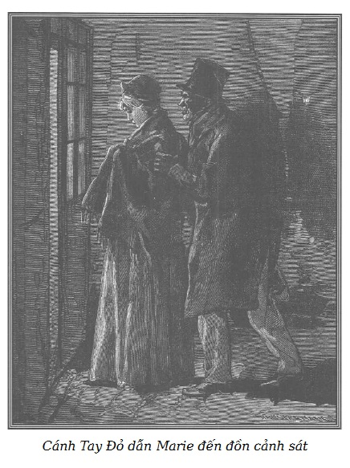
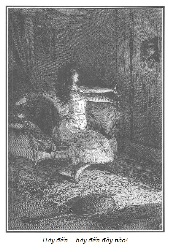

Mặc dù có tiếng động ở phía cửa, Cecily vẫn tiếp tục trang điểm cho buổi tối.
Ả rút từ trong chiếc áo lót con dao găm nhọn dài năm đến sáu pouce, đựng trong một túi da lừa đen, cán bằng gỗ mun, quấn quanh bằng sợi bạc, cầm rất vừa tay.
Thứ vũ khí này không thuộc loại xa xỉ.
Cecily cất con dao trong bao một cách vô cùng thận trọng, và đặt nó trên mặt đá của chiếc lò sưởi.
Lưỡi dao này được rèn cẩn thận bằng thép tinh luyện, hình tam giác, với cạnh rất sắc, mũi dao nhọn như mũi kim, có thể đâm thủng một đồng bạc mà không bị quằn.
Chỉ cần bị đâm xước da là sẽ chết ngay vì mũi dao được tẩm một loại thuốc độc đặc biệt.
Jacques Ferrand chưa tin vào hiệu lực của con dao nên Cecily đã chứng minh cho lão thấy bằng cách đâm nhẹ vào một con chó trong nhà. Con chó lăn ra chết ngay trong cơn đau khủng khiếp.
Đặt con dao trên lò sưởi, Cecily cởi chiếc áo vét ngắn bằng dạ đen, để lộ đôi vai, ngực và tay trần, như một cô gái đang trang điểm để đi khiêu vũ.
Theo thói quen của phần lớn các cô gái, lẽ ra mặc một áo nịt, ả mặc một áo cánh bó chặt lấy người, cùng với chiếc váy màu da cam, liền với áo, tay ngắn, cổ để hở rộng, làm thành một bộ đồ nghiêm trang hơn bộ trước và hài hòa tuyệt vời với đôi mắt tía và chiếc mũ đội điệu trên đầu.
Không gì trinh trắng bằng đường viền đôi cánh tay và đôi vai, đôi má với hai lúm đồng tiền xinh xắn và một nốt ruồi đen mịn màng, kiêu hãnh làm ả thêm duyên dáng.
Một tiếng thở dài làm Cecily chú ý.
Ả vừa cười vừa quấn lại lọn tóc vào ngón tay.
– Cecily… Cecily… – Một tiếng nói van xin.
Qua ô cửa hiện ra bộ mặt xanh xao nhợt nhạt, mũi tẹt của Ferrand. Hai con ngươi lão lấp lánh trong bóng tối.
Cecily im lặng, cho đến lúc này, ả cất lên một bài hát êm dịu. Lời bài hát ngọt ngào và ý vị.
Giọng trầm của Cecily làm át tiếng mưa dữ dội và những cơn gió mạnh như đang muốn làm rung căn nhà cũ kĩ.
– Cecil… Cecily… – Ferrand nhắc lại, giọng van nài.
Cô gái lai đột nhiên dừng lại, quay ngoắt đầu, như mới vừa nghe tiếng lão chưởng khế và đi gần lại ô cửa sổ một cách hờ hững.
– Thế nào, ông chủ thân yêu của tôi? – Ả gọi như thế một cách chế nhạo. – Ông ở đây sao? – Ả hỏi với giọng khác lạ làm cho giọng nói thêm châm chọc âm vang.
– Ôi, cô đẹp làm sao! – Lão chưởng khế lẩm bẩm.
– Ông thấy chiếc khăn quàng bộ tóc đen của tôi đẹp lắm phải không?
– Mỗi ngày tôi thấy cô càng đẹp hơn!
– Cánh tay tôi, ông thấy không, nó trắng làm sao!
– Đồ quỷ, cút đi, cút đi! – Jacques Ferrand kêu lên tức giận.
Cecily phá lên cười.
– Không, không, tôi đã chịu đựng quá nhiều rồi. Ôi, giá tôi không sợ chết, nhưng chết thì sẽ không được ngắm cô. – Ferrand kêu lên.
– Hãy nhìn tôi! Ô cửa sổ này sinh ra để làm chuyện đó. Để chúng ta có thể trò chuyện với nhau như những người bạn thân, và làm vơi đi nỗi cô đơn, thực ra không nặng nề đối với tôi lắm. Ông thật là tốt, ông chủ!
– Và cái cửa này cô cũng không muốn mở nó. Hãy xem tôi đã chịu khuất phục như thế nào. Tối nay tôi có thể thử vào với cô trong căn phòng này. Tôi chưa làm chuyện đó.
– Ông chịu khuất phục vì hai lý do: trước hết vì ông biết rõ, do sự cần thiết của cuộc sống phiêu bạt, tôi có thói quen đem theo vũ khí. Tôi sử dụng một cách thành thạo các đồ trang sức có nọc độc, sắc hơn cả răng con rắn hổ mang. Ông cũng biết khi tôi phải than phiền về ông, tôi sẽ đi khỏi nhà này và để lại ngàn lần sự khinh bỉ vì tôi muốn ban ơn cho cô hầu bất đắc dĩ mà ông đã phải lòng cô ta.
– Cô hầu của tôi? Chính tôi mới là nô lệ của cô. Tên nô lệ đáng cười đáng khinh.
– Cũng gần đúng.
– Và chuyện đó vẫn không làm cô động lòng?
– Chuyện đó làm tôi vui. Những ngày, và nhất là cả đêm sao mà dài thế.
– Ôi, con người đáng nguyền rủa.
– Không, nói một cách nghiêm chỉnh, ông có vẻ hoàn toàn đờ đẫn. Mặt mũi ông thay đổi thấy rõ khiến tôi rất hài lòng. Chiến thắng tầm thường thôi nhưng ông đang ở đây một mình…
– Hiểu như thế, và chỉ có thể tự tiêu hao mình trong một cơn điên dại bất lực.
– Ôi, ông kém thông minh quá! Có lẽ chưa bao giờ tôi nói với ông những điều tha thiết hơn thế.
– Cứ giễu cợt đi, giễu cợt đi.
– Tôi không giễu cợt đâu. Tôi chưa thấy một ai ở lứa tuổi ông si tình đến thế! Phải công nhận là không một người con trai trẻ và đẹp nào lại có thể say mê rồ dại đến thế! Một chàng Adonis tự ngưỡng mộ không kém khi ngưỡng mộ người… hắn yêu ngoài cửa miệng. Và rồi cứ thỏa mãn hắn đi. Còn gì bình thường hơn thế? Coi như nợ hắn mà, may ra thì hắn biết cho chút ít đấy. Nhưng chiếu cố cho một người như ông thì… Ông chủ ơi! Chao ôi! Khác nào đưa hắn từ dưới đất lên chín tầng mây, sẽ là thỏa mãn những ước mơ rồ dại nhất của hắn, những kỳ vọng khó thể có được nhất của hắn! Vì rằng, tóm lại là biết đâu lại có kẻ nói với ông: “Anh say đắm Cecily. Nếu ta muốn thì nàng sẽ thuộc về anh sau một giây đồng hồ.” Ông sẽ coi như kẻ ấy được phú cho những quyền lực siêu nhiên. Có phải thế không, hở ông chủ?
– Phải, chao ôi, đúng thế!
– Thế thì, này! Nếu ông tài thuyết phục tôi hơn, để tôi công nhận tình yêu tha thiết của ông đối với tôi thì tôi sẽ có thể vì ông mà chơi cái trò ngông đóng vai kẻ siêu nhiên ấy. Ông hiểu chứ?
– Tôi biết là cô vẫn cứ nhạo báng tôi, vẫn thế mãi, không thương xót.
– Có thể thế đấy. Cô đơn làm nảy sinh cuồng tưởng kỳ dị mà.
Cho đến lúc này giọng Cecily vẫn cứ cay độc, nhưng ả nói những lời vừa rồi nghiêm chỉnh, có suy nghĩ cùng với một cái liếc dài làm lão chưởng khế rùng mình.
– Cô im đi! Đừng nhìn tôi như thế. Cô làm tôi phát điên lên. Tôi rất muốn cô sẽ nói với tôi: “Không bao giờ.” Ít ra thì tôi có thể ghét bỏ cô, đuổi cô ra khỏi nhà tôi. – Jacques Ferrand kêu lên, vẫn thả mình cho sự vô vọng. – Đúng, tôi không chờ đợi gì ở cô. Nhưng, khổ thật, khổ thật! Nay thì tôi biết cô khá rõ để mong ước, mặc dù, có thể một ngày nào đó, trong một lúc rỗi rãi nào đó hay là trong lúc có những ý thích thất thường coi nhẹ, tôi sẽ chiếm được cô mà không phải bởi tình yêu. Cô nói với tôi phải làm cho cô tin ở lòng tôi. Cô không thấy tôi đã đau khổ biết bao. Lạy Chúa tôi! Tôi vẫn làm tất cả những gì có thể làm để cô vui lòng. Cô muốn ẩn nấp, tôi vẫn không bao giờ nói đến. Tôi đã hỏi cô về quá khứ, cô không trả lời tôi…
– Này, tôi đã nhầm đấy! Tôi sẽ cho ông thấy là tôi sẽ nhắm mắt tin ông. Ôi, ông chủ của tôi, hãy nghe tôi nói đây.
– Lại một sự chế giễu cay đắng nữa phải không?
– Không. Rất nghiêm túc đấy! Ít ra ông cũng phải biết cuộc đời tôi, người mà ông đã rộng lượng cho trú chân. – Cecily nói thêm bằng một giọng ăn năn, hối hận, giả nhân giả nghĩa đầy nước mắt. – Tôi là con của một chiến binh dũng cảm, anh của bà dì tôi. Tôi đã nhận được một nền giáo dục khá đầy đủ. Tôi đã bị quyến rũ và bỏ rơi bởi một người giàu có. Để tránh sự giận dữ của cha tôi, tôi đã phải trốn khỏi nước tôi. Và… – Cecily phá lên cười, nói thêm. – Hãy coi đó là chuyện làm thỏa trí tò mò của ông, trong khi chờ vài phát hiện lý thú hơn.
– Tôi chắc đó là một thứ hài hước độc ác. – Ferrand điên dại nói. – Không gì làm cô động lòng… không gì… Phải làm gì đây? Ít ra thì hãy nói đi. Tôi phục vụ cô như một tên hầu thấp hèn nhất. Vì cô, tôi đã hy sinh cả những mối lợi lớn. Tôi không còn biết tôi đang làm gì. Tôi là một đối tượng bất ngờ cho bọn thư ký cười đùa, khách hàng ngần ngại giao dịch. Tôi đã đoạn tuyệt với một số người ngoan đạo tôi thường gặp. Tôi không dám nghĩ đến những điều mà công chúng sẽ dị nghị về sự thay đổi trong thói quen của tôi. Nhưng cô không hiểu, cô không hiểu những hậu quả đau buồn đó do lòng ham muốn điên cuồng đã đến với tôi. Đấy, những chứng cứ cho lòng trung thành và sự hy sinh của tôi. Cô có muốn gì nữa không, nói đi? Hay cô cần vàng, người ta tưởng là tôi giàu hơn là tôi có, nhưng tôi…
– Ông muốn tôi làm gì với vàng của ông? – Cecily nhún vai nói cắt ngang lời lão chưởng khế. – Sống trong phòng này, tôi cần vàng để làm gì, ông thật tối dạ.
– Nhưng có phải lỗi tại tôi đâu, nếu cô bị cầm tù… Cô có ưng căn phòng này không, cô có muốn nó to đẹp hơn không? Nói đi, ra lệnh đi.
– Để làm gì, một lần nữa để làm gì? Ôi, nếu tôi phải chờ đợi một con người để tôn thờ yêu quý nồng nhiệt trong tình yêu mà họ mong muốn và chia sẻ, tôi mới mong nhung, lụa, vàng, hoa, nước hoa. Không một kỳ công sang trọng nào, không có gì lộng lẫy, không có gì quyến rũ hơn để mà đáp ứng cho tình yêu nồng nhiệt của tôi. – Cecily nói say sưa làm rung động trái tim lão chưởng khế.
– Này, những thứ sang trọng đó, hãy phán một lời… và…
– Để làm gì? Để làm gì? Một cái khung không có ảnh thì để làm gì? Và con người đáng tôn thờ ấy, họ ở đâu? Ôi, ông chủ của tôi!
– Đúng thế! Tôi già, tôi xấu, tôi chỉ có thể gợi nên sự chán ngán, ghét bỏ. Cô khinh tôi, cô giỡn tôi, tôi không đủ sức đuổi bắt cô, tôi chỉ đủ sức để chịu đau khổ.
– Ôi, sao lại có con người mau nước mắt thế! Ôi sao ngớ ngẩn và lắm lời ca thán thế! – Cecily nói giọng cay độc và miệt thị. – Hắn ta chỉ biết kêu rên, chấp nhận thất vọng. Và đã mười ngày, một mình với một phụ nữ trẻ trong ngôi nhà vắng vẻ…
– Nhưng cô gái ấy khinh tôi, cô gái ấy có vũ khí, cô gái ấy ở trong phòng kín…
– Này, hãy vượt qua sự miệt thị của cô gái ấy, làm rớt con dao khỏi tay, buộc cô ta phải mở cái cửa đã ngăn cách ông với cô ta… Cái đó không phải do sức mạnh thô bạo, biết đâu cô ta chẳng trở thành bất lực.
– Thế phải làm gì bây giờ?
– Bởi sự ham mê mãnh liệt của ông…
– Sự ham mê à? Làm sao tôi có thể gợi được cảm hứng ấy, lạy Chúa!
– Nghe đây! Ông không phải là ông chưởng khế kiêm chân giữ đồ thánh trong giáo đường. Ông đã thương hại tôi, chẳng lẽ tôi lại phải dạy ông. Ông già rồi, hãy tỏ ra có nghị lực. Người ta sẽ quên tuổi của ông. Ông bị đẩy lui. Hãy dọa nạt. Ông không thể là con ngựa hí một cách tự hào giữa những con ngựa cái động tình, ông không nên là con lạc đà ngu ngốc, quỳ gối và giơ lưng ra, hãy như con hổ. Một con hổ già gầm rú giữa cuộc tàn sát vẫn còn cứ đẹp, con hổ cái của nó sẽ đáp ứng lại trong lòng sâu bãi sa mạc…
Nghe những lời không phải không giống một kiểu hùng biện tự nhiên và táo bạo, Jacques Ferrand rùng mình, bị tác động do cách diễn đạt hoang dã gần như hung bạo, trước thái độ của Cecily, ngực cô ả căng ra, lỗ mũi mở ra, miệng ngạo mạn, gắn vào lão ta cặp mắt đen, nóng bỏng…
Chưa bao giờ cô gái hiện ra đẹp hơn!
Lão hứng khởi:
– Nói đi, nói nữa đi. Lần này cô nói nghiêm chỉnh. Ôi, nếu tôi có thể…
– Người ta có thể đạt được cái mà người ta muốn. – Cecily đột nhiên nói.
– Nhưng…
– Nhưng tôi đã nói với ông rằng, mặc dù ông rất già, rất ghê tởm, tôi muốn được ở địa vị ông để chiếm được một cô gái trẻ đẹp mà sự cô đơn đã đưa cô ta đến với tôi, một cô gái hiểu biết tất cả và cô ta có thể làm được mọi chuyện. Vâng, tôi sẽ chiếm được cô ta. Khi mục đích đó đạt được, những gì chống lại tôi sẽ thành những lợi thế tự hào biết mấy! Thắng lợi biết bao. Tôi đã biết quên đi tuổi tác và sự xấu xí của mình. Tình yêu họ dành cho tôi không phải do thương hại, do một ý thích thay đổi thất thường: tôi có được là do lòng dũng cảm và nghị lực. Vâng, bây giờ dù là có những chàng trai trẻ đẹp, rất có duyên và hấp dẫn, nhưng nhờ những biểu hiện vô bờ của một ham muốn cuồng nhiệt, tôi đã chiếm được cô gái đó. Cô cũng không thèm để mắt đến họ, vì cô hiểu rằng, những anh chàng đó sợ làm tổn hại đến chiếc cà vạt của họ, đến mái tóc uốn của họ, để tuân theo những mệnh lệnh ngông cuồng của cô. Trong khi ấy cô ném chiếc khăn mùi soa vào ngọn lửa và cô chỉ mới vừa ra lệnh thì con hổ già của cô đã nhảy vội vào đống lửa gầm lên vui sướng.
– Vâng! Tôi sẽ làm… thử làm… thử làm. – Ferrand thốt lên hưng phấn.
Cecily đi dần đến ô cửa sổ, nhìn Jacques Ferrand chằm chằm thấm thía và nói tiếp:
– Vì cô gái ấy biết rõ là cô có một kiểu cách thất thường quá mức để thỏa mãn, rằng những đứa trẻ đẹp đó sẽ nghĩ đến tiền nếu chúng có, hoặc nếu không có chúng sẽ nghĩ đến một việc hạ tiện trong lúc con hổ già của cô, con hổ ấy…
– Hắn sẽ không quan tâm đến một cái gì nữa… nghe rõ không… tài sản, danh dự… hắn sẽ hy sinh tất cả, hắn…
– Đúng! – Cecily vừa nói vừa đặt những ngón tay êm dịu lên trên những ngón tay sần sùi và lông lá của Jacques.
Lần đầu tiên Jacques hưởng cái cảm giác mát rượi và mượt mà của làn da cô gái.
Lão trở nên nhợt nhạt hơn và thở khàn khàn hổn hển.
– Giả sử cô ta mà có kẻ thù, thì chỉ vừa đưa mắt cho con cọp già thấy và cô nói với nó: “Tấn công đi…” và…
– Và hắn sẽ đánh. – Vừa nói Ferrand vừa gắn đôi môi khô khốc vào những ngón tay Cecily.
– Đúng, con cọp già sẽ đánh chứ? – Vừa nói Cecily vừa áp tay mình vào ngón tay Ferrand.
– Để chiếm được cô, thằng khốn nạn ấy nói: “Tôi nghĩ là tôi sẽ có thể phạm tội ác.”
– Này, ông chủ. – Cecily đột nhiên vừa nói vừa rút tay ra khỏi tay Ferrand, và lùi ra khỏi ô cửa nhỏ. – Ông hãy đi đi, tôi không còn nhận ra ông nữa, tôi thấy ông xấu xa hơn lúc nãy nhiều, ông đi đi.
Cô gái đáng ghét này biết cho những lời nói và cử chỉ cuối cùng này dấu hiệu của một sự thật đến khó tin. Cái nhìn của ả vừa bất ngờ, bốc lửa vừa giận dữ như thể hiện một cách tự nhiên sự bực mình vì một lúc đã quên đi cái xấu của Ferrand mà lão này thì đang mang một hy vọng cuồng nhiệt, lão vừa kêu lên vừa bám lấy thành cửa sổ.
– Cecily, hãy quay lại. Hãy ra lệnh. Hãy ra lệnh. Tôi sẽ làm con hổ của cô.
– Không, không, không, ông chủ! – Cecily vừa nói vừa đi xa cửa sổ hơn. – Và để xua đi lũ quỷ đang rình rập, tôi sẽ hát một điệu dân ca của xứ sở tôi. Ông chủ, ông có nghe không? Bên ngoài gió càng mạnh hơn. Cơn bão nổi lên dữ dội. Một đêm đẹp biết bao cho các cặp tình nhân ngồi sát bên nhau gần ngọn lửa chập chờn đẹp đẽ.
– Cecily, hãy quay lại! – Ferrand nói giọng van xin.
– Không, không, lát nữa… khi tôi không còn thấy nguy hiểm nữa… Nhưng ánh sáng của chiếc đèn kia làm tôi khó nhìn… một chút mơ mộng làm nặng mi mắt tôi… một khoảng hơi tối sẽ làm tôi dễ chịu… Người ta nói là tôi đang ở buổi hoàng hôn của khoái cảm.
Cecily đến bên lò sưởi, tắt ngọn đèn, cầm cây đàn ghi-ta đang treo trên tường, làm dịu bớt ngọn lửa mà ánh sáng của nó từ nãy làm sáng căn phòng rộng này.
Từ sau ô cửa hẹp, nơi Ferrand đứng im lặng, quang cảnh diễn ra như sau:
Ở giữa vùng sáng có ánh lửa run rẩy của lò sưởi. Cecily dáng vẻ mềm mại và buông thả, nằm nửa ngủ nửa thức trên một chiếc đi-văng bọc gấm quý, cầm đàn dạo vài âm điệu mở đầu.
Lò sưởi cháy đượm hắt ánh hồng lên người cô gái lai, càng làm cho hình ảnh cô ả nổi bật giữa phần tối còn lại của căn phòng.
Những ngọn lửa trong lò sưởi rung rinh trên trần và trên các bức tường làm cho quang cảnh trong phòng thêm hư ảo.

.Bên ngoài, cơn bão mạnh gấp đôi. Người ta nghe tiếng gió gầm rít. Vừa dạo khúc nhạc trên chiếc đàn ghi-ta, Cecily vừa ném một cái nhìn hấp dẫn đến Ferrand đang mê hồn, mắt không rời cô gái.
– Này, ông chủ, hãy nghe một điệu hát của xứ sở tôi. Chúng tôi không biết làm thơ, chúng tôi chỉ kể một câu chuyện không có vần điệu và giữa mỗi chỗ dừng, chúng tôi ứng khẩu một bài thơ tình sử thời Trung cổ, thích hợp với ý của điệp khúc, rất mộc mạc và quê mùa. Điều đó chắc làm ông thích, tôi tin như thế, ông chủ… Bài hát đó có tên là Người phụ nữ đa tình. Người đó nói…
Và Cecily bắt đầu kể chuyện, nhấn mạnh giọng gợi cảm hơn là bởi giọng điệu của bài hát. Vài hợp âm êm dịu của chiếc đàn run rẩy hòa theo:
“Những bông hoa, khắp nơi đầy hoa
Người yêu em sắp đến. Sự chờ đợi hạnh phúc nghiền nát em và làm em bực bội.
Ta hãy làm dịu ánh sáng ban ngày, sự khoái lạc cần bóng tối trong suốt.
So với hương hoa tươi mát, người yêu em thích hơi thở nóng bỏng của em.
Ánh sáng ban ngày không làm chói mắt anh vì dưới những nụ hôn của em, mi mắt anh khép lại.
Thiên thần của em, hãy đến đây, lồng ngực em phập phồng, máu em sục sôi.
Đến đây. Hãy đến đây. Hãy đến đây.”
Những lời ca đó được tấu lên với sự hăng say, dường như cô gái đang nói với người yêu vô hình. Những ngón tay đáng yêu lướt trên phím đàn ghi-ta những âm thanh đầy hương vị ngọt ngào.
Nét mặt rạng rỡ của Cecily, đôi mắt mơ màng, ướt át luôn hướng về Ferrand, thể hiện sự chờ đợi nóng lòng, mơ mộng.
Lời ca tình tứ, âm nhạc ngất ngây, ánh mắt bốc lửa, vẻ đẹp khêu gợi lý tưởng, bên ngoài im lặng, đêm tối… Tất cả những cái đó làm cho Ferrand mất hết lý trí. Lão cuống cuồng kêu lên:
– Hãy ban ơn! Hãy ban ơn! Cecily, cô làm tôi mất hồn, hãy im đi! Tôi chết mất! Ôi, tôi muốn phát điên.
– Hãy nghe điệp khúc thứ hai, ông chủ! – Cô gái lai vừa nói vừa tiếp tục hát:
“Nếu người yêu em ở đấy, bàn tay anh vuốt ve bờ vai trần của em, em cảm thấy run rẩy và chết lịm.
Nếu anh ở đấy, tóc anh mơn trớn đôi má, đôi má xanh xao của em sẽ ửng hồng.
Đôi má xanh xao rực cháy.
Linh hồn của hồn em, nếu anh ở đây, cặp môi khô khốc, cặp môi đam mê của em sẽ không nói một lời nào…
Lẽ sống của em, nếu anh ở đây… không phải là em suy sụp mà xin tha đâu!
Những gì em yêu, giống như em yêu anh, em giết hết.
Thiên thần của em ơi! Ôi, hãy đến với em đi. Lồng ngực em phập phồng… Máu em bốc lửa…
Hãy đến… hãy đến đây… hãy đến đây…”

.Nếu cô gái lai hát điệp khúc thứ nhất với một tâm hồn yếu đuối, mơ mộng, thì ở phần cuối này cô ả hát với tất cả sự lôi cuốn của một tình yêu cổ xưa. Và hình như cây đàn tỏ ra bất lực, cô ả ném cây đàn sang bên, đứng lên giơ tay về phía Ferrand đang đứng, cô ả nhắc lại bằng một giọng cuống cuồng như sắp chết:
– Ôi, hãy đến… hãy đến… đến…
Ferrand kêu lên một tiếng đáng sợ:
– Ôi! Cái chết, cái chết cho người mà cô yêu như thế. Cô nói những lời nóng bỏng đó với ai đấy? – Vừa nói lão vừa lay làm rung chuyển cửa ra vào với một sự kích động và lòng ghen ghét dữ dội. – Ôi, cuộc sống của tôi, gia tài của tôi cho một phút khoái lạc đang giày vò… cô vừa vẽ nên bằng nét lửa…
Mềm mại như một con báo, cô ả nhảy một bước tới ô cửa nhỏ, nói với Ferrand giọng hồi hộp:
– Này, thú thực với ông, tôi cũng bị những lời hát đó kích động. Tôi không muốn trở lại cái cửa này, nhưng tôi đã quay lại, dù tôi không muốn, vì tôi còn chờ những lời nói của ông từ nãy giờ. “Nếu cô bảo tôi đánh, tôi sẽ đánh.” Ông có yêu tôi thật không?
– Cô muốn có vàng, tất cả vàng của tôi không?
– Không, tôi đã có đủ.
– Cô có một kẻ thù chăng? Tôi sẽ giết nó.
– Tôi không có kẻ thù.
– Cô có muốn làm vợ tôi không? Tôi sẽ cưới cô.
– Tôi đã có chồng.
– Thế thì cô muốn gì? Lạy Chúa, cô muốn gì?
– Hãy chứng tỏ ông ham muốn tôi đến mù quáng, dữ dội, và ông sẽ hy sinh tất cả…
– Tất cả, vâng, tất cả… nhưng thế nào?
– Tôi không biết, nhưng có lúc ánh mắt của ông đã làm tôi choáng váng. Và nếu lúc ấy ông không cho tôi một dấu hiệu của một tình yêu mạnh mẽ, kích thích trí tưởng tượng của một cô gái đang ham mê cuồng nhiệt… Tôi không hiểu tôi có thể làm gì. Hãy nhanh lên. Tôi là người tính nết thất thường. Ngày mai, những cảm giác đó sẽ bị xóa hết.
– Nhưng tôi có thể bày tỏ với cô điều gì để làm bằng chứng trong lúc này?
Con người đau khổ đó xoắn hai bàn tay, đau đớn khốc liệt: Bằng chứng gì? Ngay lúc này sao?
– Ông chỉ là một thằng ngốc. – Cecily vừa nói vừa lùi ra xa ô cửa khinh bỉ và giận dữ. – Tôi đã bị lừa dối. Tôi tưởng ông trung thành mạnh mẽ. Thật là đáng tiếc!
– Cecily, đừng đi! Hãy quay lại. Nhưng phải làm gì đây? Ít ra cũng nói cho tôi biết. Ôi, đầu óc tôi đã mất phương hướng, phải làm gì, phải làm gì…?
– Tìm đi.
– Lạy Chúa, lạy Chúa!
– Tôi đã không quá sẵn sàng để ông có thời cơ chiếm đoạt đó sao? Nếu ông thích, ông sẽ khó tìm được một cơ hội như thế này!
– Nhưng tóm lại, người ta nói cái gì người ta muốn. – Lão chưởng khế nói gần như mất trí.
– Hãy đoán xem.
– Giải thích cho tôi đi. Ra lệnh đi!
– Này, nếu ông thật sự ham muốn, say mê tôi như ông nói, ông sẽ tìm được cách làm tôi tin. Thôi chào ông!
– Cecily!
– Tôi sẽ đóng cái ô cửa sổ này lại… thay vì mở cửa ra vào kia…
– Một ơn huệ, hãy nghe đã nào!
– Tôi nghĩ đầu óc tôi đã bốc lên, cái lò kia sẽ tắt, bóng tối sẽ bao trùm. Tôi không còn nghĩ đến sự hy sinh của ông, lúc đó cái chốt cửa, nhưng không, hình như ông không muốn… Ôi, ông không biết ông đã mất cái gì… Thôi chào! Hỡi thánh nhân!
– Cecily, nghe đây. Hãy ở lại. Tôi đã tìm thấy. – Jacques kêu lên sau một lát im lặng với một niềm vui đặc biệt.
Con người khốn khổ đó đã bị choáng váng.
Trí thông minh của lão bị mờ đi vì làn hơi độc.
Phó thác cho ham muốn mù quáng, lão mất hết mọi khôn ngoan, mọi giữ gìn. Bản năng tự vệ tinh thần không còn nữa.
– Nào, các chứng cứ tình yêu của ông đâu? – Cecily vừa nói, vừa đi đến lò sưởi, lấy con dao găm và từ từ đi lại ô cửa sổ, được chiếu sáng yếu ớt bằng ánh lửa trong lò sưởi.
Trong lúc lão chưởng khế không để ý, cô ả lấy một sợi xích, một đầu nối liền hai đinh khuy mà ả đã vặn vào cửa phòng và đầu kia vào trong phòng.
– Nghe đây, – Jacques nói giọng đứt quãng – nếu tôi đặt danh dự, tài sản của tôi, cuộc đời tôi vào tay em, thì em có tin là tôi yêu em không?
– Danh dự của ông, cuộc sống của ông? Tôi không hiểu nổi.
– Nếu tôi giao cho em bí mật có thể làm tôi phải lên đoạn đầu đài, em có tin tôi không? Em có thuộc về tôi không?
– Ông mà phạm tội? Ông đùa à? Thế còn sự khắc khổ của ông…
– Là dối trá!
– Lòng chính trực của ông?
– Là dối trá!
– Lòng thương hại của ông?
– Là dối trá!
– Ông sẽ là một ông thánh hay sẽ là một con quỷ. Ông đã tự khoe mình. Không, không có một người nào đủ khéo léo, trí trá, đủ kiên cường lạnh lẽo, đủ dũng cảm để có thể chiếm được sự tín nhiệm và kính trọng của người khác. Đó chỉ là những lời châm biếm độc hại, một thách thức rùng rợn tung ra trước xã hội.
– Tôi chính là người đó. Tôi đã tung lời châm biếm, thách thức đó ra xã hội. – Lão chưởng khế nói với niềm kiêu hãnh đặc biệt.
– Jacques… Jacques, đừng nói như thế! – Cecily rít lên, ngực phập phồng. – Ông làm tôi phát điên!
– Cái đầu tôi dành cho những nụ hôn của em. Em muốn không?
– Còn gì ham muốn bằng. – Cecily kêu lên. – Hãy cầm con dao găm này. Ông đã tước vũ khí của tôi.
Qua ô cửa, Jacques đã cầm thứ vũ khí nguy hiểm đó một cách cẩn thận, và ném nó ra xa phía hành lang.
– Cecily, em tin tôi chứ?
– Tôi tin ông. – Vừa nói, cô gái lai vừa áp mạnh đôi bàn tay mình lên đôi tay Jacques. Vâng, tôi tin ông vì tôi đã tìm lại được cái nhìn ban nãy, cái nhìn làm tôi bị quyến rũ. Đôi mắt ông ánh lên một sức man rợ. Jacques, tôi yêu đôi mắt ông.
– Cecily, em nói thật chứ?
– Nếu tôi nói thật…
– Em sẽ thấy…
– Vâng, mắt ông đe dọa, nét mặt ông đáng sợ. Này, ông đáng sợ và đẹp như một con hổ đang tức giận… Nhưng ông đang nói thật phải không?
– Tôi đã phạm tội ác như đã nói với em!
– Càng hay… nếu…
– Và nếu tôi nói hết…
– Tôi chấp nhận hết, vì ông dám có một lòng tin mù quáng, ông thấy không… Jacques, ông sẽ không chỉ là người tình lý tưởng trong bài hát tôi vừa nhắc. Dành cho ông, con hổ của tôi, cho ông… tôi nói… Đến đi, đến đi, đến đi!
Trong khi nói những lời ấy với giọng thèm muốn nồng nàn, Cecily đã đến rất gần ô cửa sổ nhỏ, gần đến nỗi Jacques cảm thấy hơi thở nóng hổi của ả, và những ngón tay đầy lông lá cảm thấy như điện giật bởi đôi môi tươi mát và rắn chắc của ả.
– Ôi, em sẽ là của tôi. Tôi sẽ là con hổ của em. Và nếu em muốn, em sẽ làm tôi mất danh dự, làm cho tôi mất đầu. Danh dự của tôi, cuộc sống của tôi, lúc này, đều thuộc về em.
– Danh dự của ông?
– Danh dự của tôi, nghe đây! Đã có năm người ta giao cho tôi một đứa trẻ và hai trăm franc dành cho nó. Tôi bỏ rơi đứa bé. Tôi làm một giấy khai tử giả, và lấy trọn số tiền.
– Thật là khôn khéo, táo bạo. Ai dám tin ông làm chuyện đó.
– Nghe thêm đây. Tôi ghét người thủ quỹ của tôi. Một hôm hắn lấy của tôi một ít vàng và ngay ngày hôm sau đã trả lại, nhưng tôi muốn tống cổ tên này, nên đã vu cho hắn tội ăn cắp một khoản tiền lớn. Người ta tin tôi và đã cho hắn vào tù. Giờ đây danh dự của tôi có phải đã nằm trong tay em không?
– Ôi, Jacques, em yêu anh, anh đã thổ lộ cho em những bí mật của đời anh. Quyền lực nào mà em đã có với anh? Em sẽ không phản bội. Hãy cho em được hôn vầng trán đã có những ý tưởng tuyệt vời đó.
– Ôi! – Jacques mấp máy. – Dù đoạn đầu đài ngay trước mắt tôi cũng không lùi bước. Hãy nghe thêm. Đứa trẻ tôi bỏ rơi hồi trước, tôi lại gặp lại. Nó làm tôi lo sợ, tôi đã cho giết nó.
– Anh… Sao cơ? Ở đâu?
– Cách đây ít ngày, gần cầu Asnières, đảo Ravageur. Một người mang họ Martial đã dìm con bé xuống sông từ một cái xuồng thủng đáy. Em có tin không?
– Ôi, quỷ dữ, địa ngục, anh làm em kinh hãi, nhưng vì thế anh càng hấp dẫn hơn, làm em say sưa. Quyền lực của anh thật ghê gớm!
– Hãy nghe thêm nữa. Có một người đã giao cho tôi một trăm ngàn écu. Tôi đã làm cho hắn rơi vào bẫy và chắc là hắn đã tự tử. Tôi đã phủ nhận sự ký thác mà chị hắn đòi. Bây giờ số phận tôi đã nằm trong tay em. Hãy mở cửa ra…
– Jacques, em tôn thờ anh. – Cecily nói giọng tán dương.
– Ôi, cả ngàn người chết, tôi còn bất chấp. – Lão chưởng khế nói trong một cơn say không tả hết được. – Đúng, em nói có lý. Tôi cứ như trẻ ra, đáng yêu mà tôi không nhận biết. Chìa khóa, đưa chìa khóa cho tôi… rút chốt ra…
Cô gái lai rút chìa khóa khỏi ổ khóa, cài phía trong, và đưa chìa cho lão chưởng khế nói:
– Jacques, em điên mất!
– Thế là em đã thuộc về anh. – Jacques rú lên man rợ, vội vàng mở khóa.
Nhưng cánh cửa bị cài bên trong không mở được.
– Lại đây, con hổ của em! Lại đây. – Cecily nói hổn hển.
– Cái chốt cửa… Cái chốt cửa… – Jacques kêu lên.
– Nhưng nếu anh lừa em. – Cecily bỗng kêu lên. – Nếu những bí mật đó anh bịa ra để đùa em.
Một phút yên lặng vì ngây ngất, lão chưởng khế hoàn toàn tin vào thời điểm chót cho nguyện vọng của mình. Rất nhanh, lão cho tay vào ngực, mở áo gi-lê, giật mạnh sợi dây kim loại có treo một chiếc ví nhỏ màu đỏ, giơ qua cửa sổ cho Cecily và nói, giọng mệt mỏi, hổn hển:
– Cái này là cái làm mất đầu anh. Hãy mở chốt cửa! Nó là của em.
– Hãy đưa cho em, con hổ của em!
Và ả nhanh tay rút chốt cửa, tay kia nắm lấy cái ví.
Nhưng Jacques chỉ rời chiếc ví khi lão cảm thấy cánh cửa sẽ mở dưới sức mạnh của lão.
Nhưng nếu phải mở cửa, cô ả chỉ để mở hé vài phân, vì phía trên còn bị sợi dây xích giằng lại.
Jacques vội vàng đẩy cửa, nhưng vẫn chưa vào được.
Nhanh như cắt, Cecily cắn chiếc ví trong miệng, mở nhanh cửa sổ, ném một chiếc áo choàng xuống sân, và nhanh nhẹn, dũng cảm, nắm lấy sợi dây đã buộc sẵn ngoài ban công, tụt từ trên gác xuống sân, nhanh và nhẹ nhàng như một mũi tên rớt xuống đất.
Cô ả mặc vội chiếc áo choàng, chạy đến chỗ người gác cổng, mở cửa ra ngoài phố, nhảy lên một chiếc xe cách đó chừng hai mươi mét, nó được lệnh tối nào cũng chờ sẵn, kể từ khi Cecily vào nhà Ferrand, theo lệnh của Nam tước de Graün.
Chiếc xe chạy nước đại do hai con ngựa kéo.
Cô ả ra đến tận đại lộ, Ferrand mới nhận ra ả đã chạy trốn.
Hãy quay lại với con quỷ này.
Qua cửa tò vò, lão ta chỉ nhận ra cái cửa sổ mà Cecily đã chuẩn bị bảo đảm cho việc bỏ trốn.
Bằng sức mạnh của đôi vai rộng, Jacques đã làm tung sợi xích và ùa nhanh vào phòng.
Lão không thấy ai trong đó. Chiếc dây thừng có thắt nút còn lủng lẳng trước ban công cửa sổ, nơi lão đang cúi xuống.
Trong lúc ở bên kia sân, qua ánh trăng vừa thoát ra khỏi đám mây mù của trận bão, lão thấy cửa cổng mở.
Lão đã hiểu ra mọi chuyện.
Một tia hy vọng cuối cùng còn trong lão.
Lão đến ban công, quả quyết nắm lấy dây thừng, tụt xuống sân và đi nhanh ra khỏi cửa.
Đường phố vắng tanh. Lão không nhìn thấy ai. Lão chỉ còn nghe vang vọng tiếng xe chở Cecily đã chạy đi.
Lão nghĩ đó là vài chiếc xe về chậm nên không để ý.
Lão không hy vọng tìm được Cecily, người đã đem theo mọi chứng cứ những tội ác của lão.
Trước sự thật rùng rợn đó, lão ngã như bị sét đánh trên một cột mốc đặt trước cửa.
Lão nằm đó khá lâu, câm lặng, bất động như hóa đá.
Hai mắt trừng trừng, răng nghiến chặt, miệng sùi bọt, những móng tay cào vào ngực đến chảy máu, lão cảm thấy đầu óc ngẩn ngơ như chìm đắm trong vực thẳm.
Khi tỉnh lại, lão bước đi nặng nề, loạng choạng. Mọi vật rung rinh trước mắt lão, như vừa qua một cơn say rượu.
Lão khép mạnh cánh cổng và đi vào sân.
Mưa đã tạnh.
Gió vẫn thổi mạnh xua đi những đám mây màu xám, làm rõ ánh trăng nhợt nhạt chiếu vào trong nhà.
Không khí trong lành và mát lạnh ban đêm đã làm lão bình tĩnh một phần. Lão muốn chống lại sự rối loạn nội tâm bằng những bước đi hối hả, đi vào các lối đi bùn lầy trong vườn, bước những bước nhanh và thỉnh thoảng lại đấm lên trán hai đấm mạnh mẽ.
Bước đi một cách vô định, lão đã đi đến gần một nhà kính trồng rau. Bỗng lão vấp phải một đống đất mới đào.
Lão cúi xuống, nhìn một cách vô thức, thấy vài mảnh giẻ có máu. Lão thấy mình đứng gần cái hố mà Louise đã đào để chôn đứa con.
Con của Louise cũng chính là con của Jacques Ferrand.
Mặc dù cứng rắn, dù những nỗi sợ khủng khiếp đang làm lão lo sợ, Ferrand vẫn rùng mình thấy có một cái gì đó thật oan nghiệt trong sự ngẫu nhiên đó: sự ngẫu nhiên đã dẫn lão đến cái hố chôn đứa con mình, kết quả bất hạnh của sự bạo lực và tà dâm của lão.
Trong một hoàn cảnh khác, Ferrand hẳn đã thản nhiên và thô bạo đạp lên nấm mồ đó, nhưng do kiệt sức và do màn kịch bất ngờ vừa xảy ra, lão cảm thấy bất lực và kinh hoàng.
Trán đẫm mồ hôi lạnh toát, đầu gối run run, lão ngã lăn ra ngay bên miệng hố, bên nấm mồ con lão.